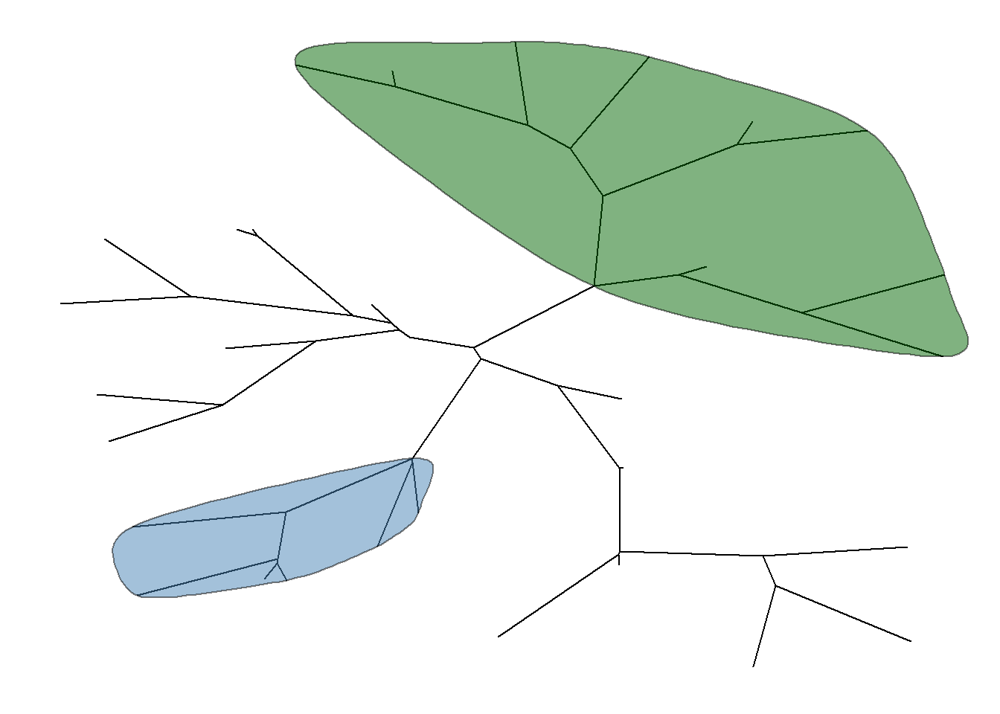

This lesson introduces basic annotation utilies for common tasks such as highlight and labelling clades.
library(ggtree)
set.seed(2015-12-21)
tree <- rtree(30)
p <- ggtree(tree) + xlim(NA, 6)
p + geom_cladelabel(node=45, label="test label") +
geom_cladelabel(node=34, label="another clade")We can use align=TRUE to align the clade label and use offset to adjust the position.
p + geom_cladelabel(node=45, label="test label", align=T, color='red') +
geom_cladelabel(node=34, label="another clade", align=T, color='blue')Look at the help for ?geom_cladelabel to learn the usages of other parameters.
ggtree implements geom_hilight to add rectangle to highlight selected clade.
ggtree(tree) + geom_hilight(node=34, fill="steelblue", alpha=.6) +
geom_hilight(node=45, fill="darkgreen", alpha=.6)geom_hilight supports rectangular and circular layouts. For unrooted layout, ggtree provides geom_hilight_encircle layer.
ggtree(tree, layout = "unrooted") + geom_hilight_encircle(node=34, fill='steelblue') +
geom_hilight_encircle(node=45, fill="darkgreen")
ggtree provides geom_range to display uncertainty of evolutionary inference.
This example use a BEAST tree, which was imported by treeio. Data that stored in the tree object or mapped to the tree from external data can be used to annotate the tree directly.
beast_tree <- read.beast("data/MCC_FluA_H3.tree")
ggtree(beast_tree) + geom_range(range = 'height_0.95_HPD', branch.length='height', color='red', alpha=.6, size=2)rate in beast_tree) to color branches.Visualizing tree with external data will mainly be introduced in next lesson. As visualizing heatmap and multiple sequence alignment with the tree are frequently used, ggtree provides gheatmap and msaplot function for these tasks.
genotype <- read.table("data/Genotype.txt", sep="\t", stringsAsFactor=F)
colnames(genotype) <- sub("\\.$", "", colnames(genotype))
p <- ggtree(beast_tree) + geom_tiplab(size=2)
gheatmap(p, genotype, offset=8, width=0.6, font.size=3) +
scale_fill_brewer(palette="Set2", breaks=c("HuH3N2", "pdm", "trig"))Paired.The msaplot accepts a tree (output of ggtree) and a fasta file, then it can visualize the tree with sequence alignment. We can specify the width (relative to the tree) of the alignment and adjust relative position by offset, that are similar to gheatmap function.
tree <- read.tree("data/tree.nwk")
p <- ggtree(tree) + geom_tiplab(size=3)
msaplot(p, "data/sequence.fasta", offset=3, width=2)